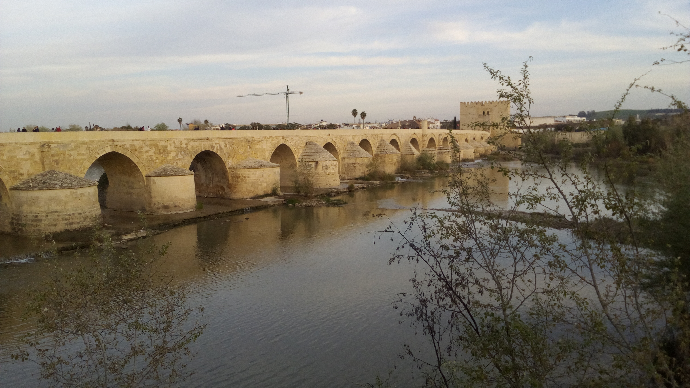
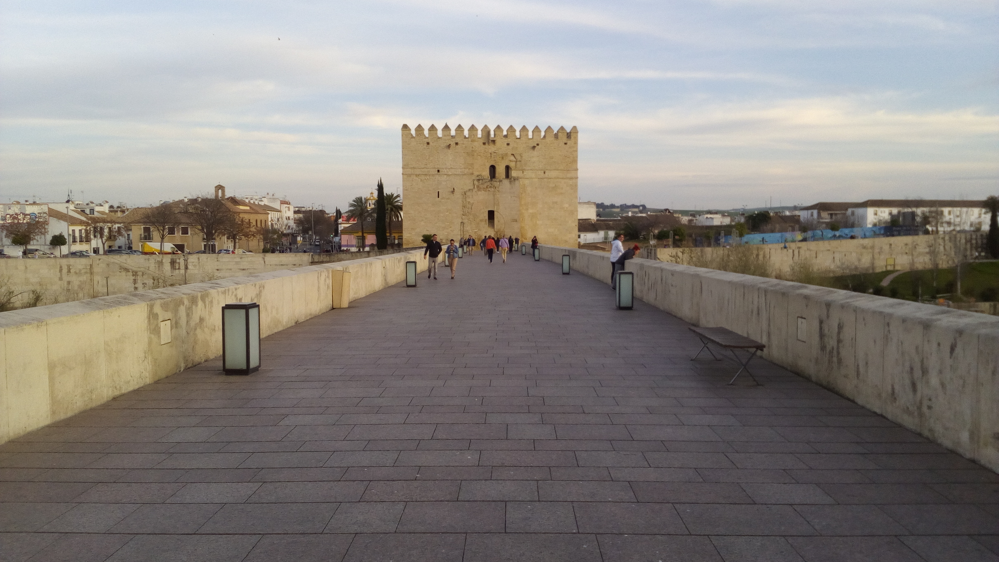
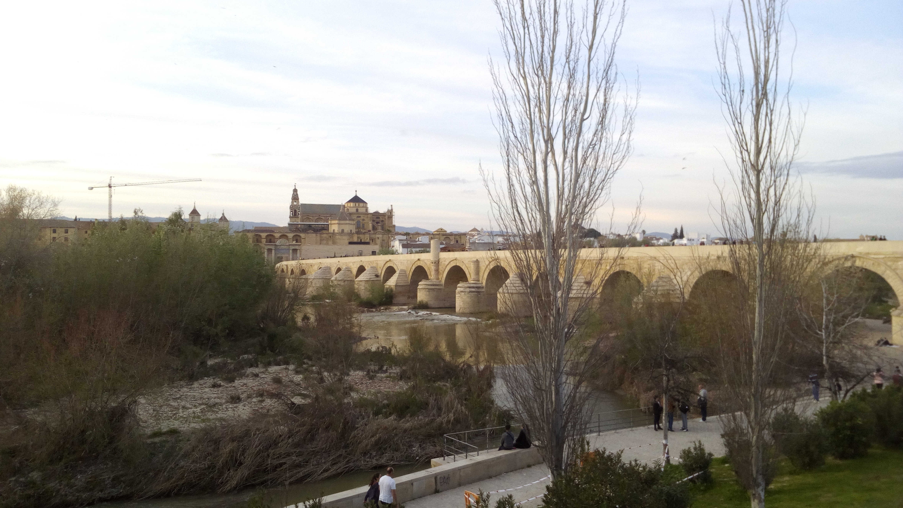
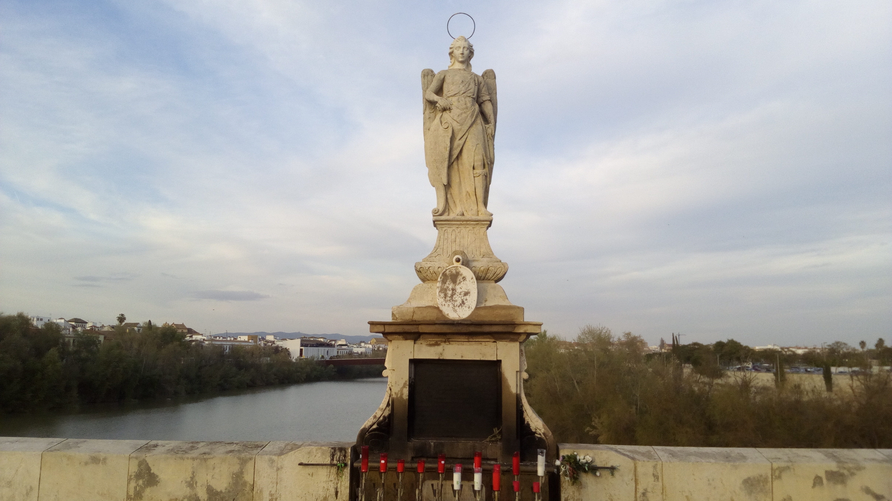

Se cree que fue construido por el primer emperador Augusto (27a.C. - 14a.C.) cuando Córdoba adquirió el título de Colonia Patricia y se amplió hacia el Guadalquivir. Su longitud es de 331 metros y actualmente está compuesto por 16 arcos, aunque originalmente tuvo 17. Fue una de las entradas más importantes a la ciudad desde la zona sur de la península ibérica por ser el único punto para cruzar el río sin utilizar ningún tipo de embarcación.
Con la llegada de los musulmanes, alrededor del año 720, se hayan evidencias de la primera gran reconstrucción. En su extremo sur encontramos la Torre de la Calahorra para la defensa de la ciudad y en el extremo norte la puerta del Puente.